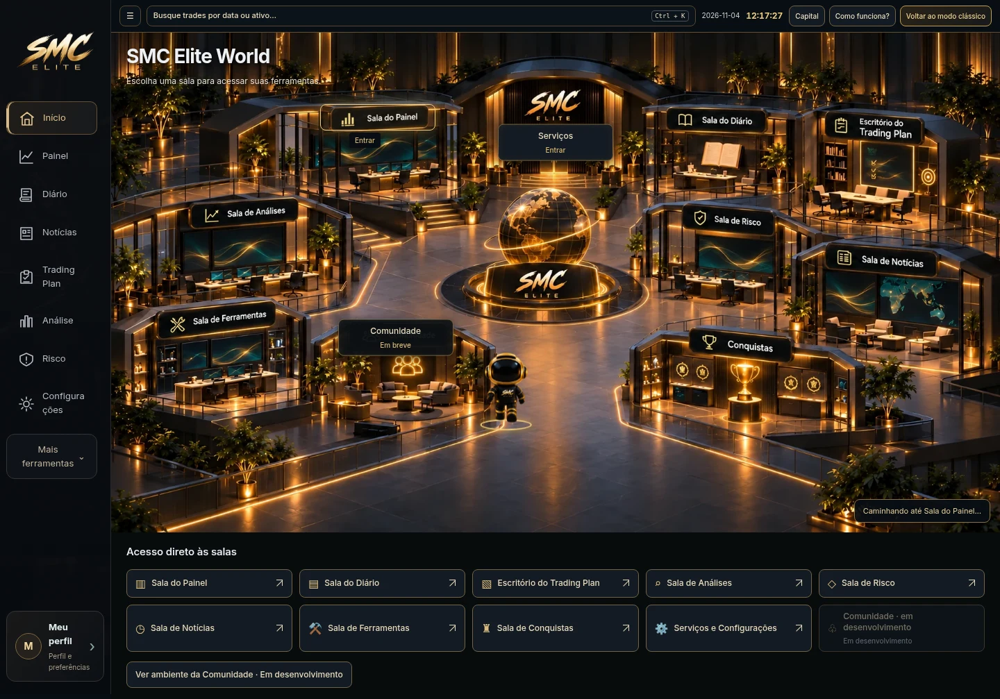
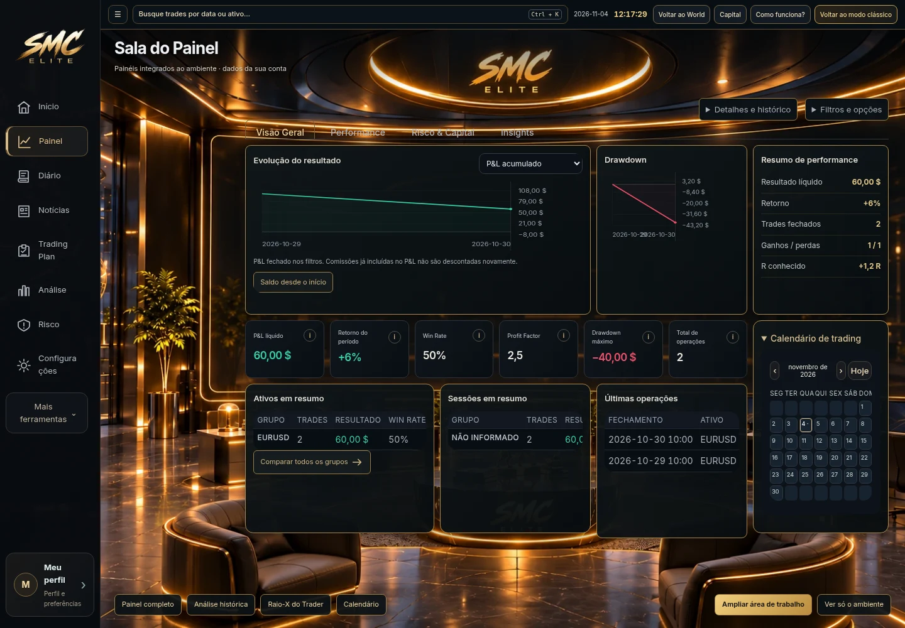
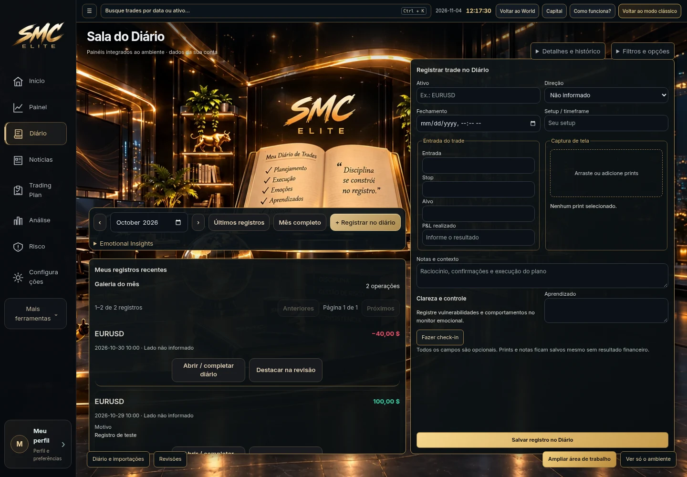
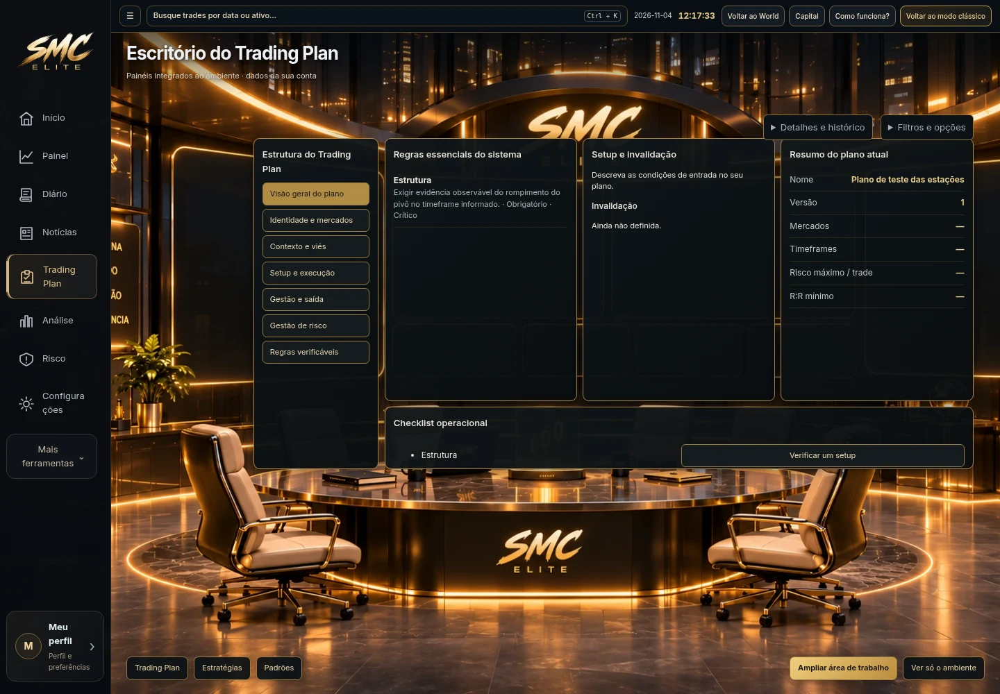
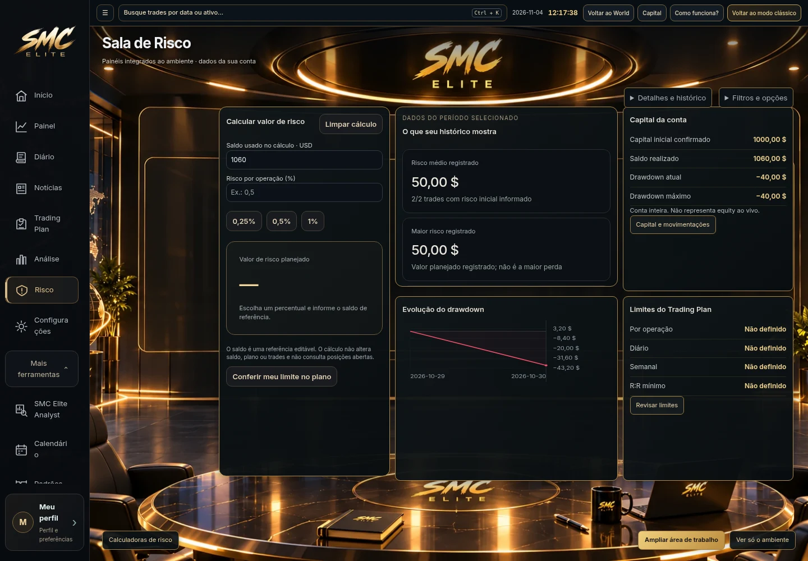

Capturas reais de navegador com fixtures de teste. Os valores pertencem aos registros de teste e não são valores iniciais do aplicativo nem dados de clientes. Os widgets e os formulários estão ligados aos motores e fluxos reais.




